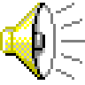
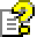

<!-- because this is a cheesy Windows 98 theme, include cheesy Windows 98 sound  -->
<audio id="sound">
  <source src="../assets/98sound.wav" type="audio/wav">
</audio>
<script>
  function playSound() {
    document.getElementById("sound").play();
  }
</script>

<div class="status-bar">
  <div class="systray status-bar-field">
    <!-- <a onclick="playSound()" class="has-tooltip"> -->
      
    <!-- </a> -->
    <a href="/about" class="has-tooltip">
      
    </a>
    <div class="systray-balloon">
      
      <div class="systray-balloon__header">
        <a href="https://github.com/queenkjuul/jekyll-98">jekyll-98 theme by queenkjuul</a><br/>
      </div>
      <div class="systray-balloon__content">
        <a href="https://botoxparty.github.io/XP.css">depends on XP.css by botoxparty</a><br/>
        <a href="https://jdan.github.io/98.css">which is built on 98.css by jdan</a><br/>
        all of which are under the MIT license<br/>
        <br/>
        uses SuperTinyIcons by edent<br/>
        see license information here: <br/>
        <a href="https://github.com/edent/SuperTinyIcons">https://github.com/edent/SuperTinyIcons</a><br/>
      </div>
    </div>
    {{ site.time | date: '%H:%M'}}
  </div>
</div>